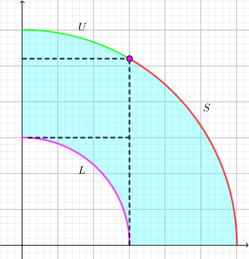

给定正整数 $N$，求有多少个 $0, 1, \cdots, 2 N - 1$ 的排列 $P_0, P_1, \cdots, P_{2 N - 1}$，满足：
共一行，包含两个正整数 $N, M$ ($1 \leq N \leq 250; 2 \leq M \leq 10^9$)，表示排列的长度的一半以及模数。
输出一行一个整数，表示满足条件的排列数量模 $M$ 的结果。
首先，考虑条件 $N^2 \leq i^2 + P_i^2 \leq 4 N^2$，可以看出这明显就是吓人的，因为这个条件对于每个 $i$ 独立，精确地，我们可以对每个 $i$ 求出它的下界 (记为 $l_i$) 和上界 (记为 $u_i$)。
于是问题就转化为：在条件 $i \in \left[ l_i, u_i \right]$ 下，有多少个排列？
如果没有下界的限制 ($l_i$)，只限制了 $P_i$ 的上界，那它就是一个非常经典的问题，我们在 [AtCoder3956,Grand23E]Inversions 中已经提到过，将所有的上界按照从小到大排序的结果为 $u'_0 \leq u'_1 \leq \cdots \leq u'_{2 N - 1}$，则这样的排列 (0-indexed) 总数为 $$ J = \prod_{i=0}^{2 N-1} \left( u'_i - \left( i - 1 \right) \right) $$
那现在一些元素有下界，又该如何处理呢？
我们观察这个限制的形式。不妨从数形结合的角度考虑，如果把 $i$ 看成横坐标，$P_i$ 看成纵坐标，则排列中所有元素所对应的点必须在 $N^2 \leq x^2 + y^2 \leq 4 N^2$ 所决定的圆环中，如下图所示：
可以看出，后一半元素 (即 $N \leq i < 2 N$ 的元素) 的下界本身就是无限制的 (即 $l_i = 0$)，有限制的元素只在前一半元素所对应的 "内环" 中体现出来。
于是我们考虑使用容斥原理对不合法的排列进行剔除。
用 $J_i$ 表示已知 $i$ 个位置的取值在内环中，其余取值任意的排列数。
同样，由于枚举了容斥集合，因此容斥系数为 $\pm 1$，从而最终的答案就是 $$ J_0 - J_1 + J_2 - \cdots + \left( -1 \right)^N J_N \tag 1 \label 1 $$
接下来考虑如何求出 $\left\{ J_n \right\}$ 序列。
首先，由于集合的总数为 $2^N$，因此暴力计算时不现实的。于是和往常一样，考虑使用 DP 来完成容斥的整个过程。
考虑这三段圆弧 $\color {fuchsia} L, \color {lime} U, \color {red} S$，可以发现：圆弧 $U$ 始终在圆弧 $L$ 和圆弧 $S$ 的上方，因此对于 $U$ 部分的限制，始终应该放到最后执行。
而对于圆弧 $L$ 和圆弧 $S$，可以发现它们的大小是交错变化的，因此就难以分开处理。
从而，我们将 $0 \sim 2 N - 1$ 这 $N$ 个下标，分成左/右两个部分，按照以下方式排序归并：
对于 $0 \sim N - 1$ 的部分，我们将它的下界 $l_i - 1$ (即圆弧 $L$ 控制的值) 看成它的关键字 (key)。
对于 $N \sim 2 N - 1$ 的部分，我们将它的上界 $u_i$ (即圆弧 $S$ 控制的值) 看成它的关键字 (key)。
而对于同一部分的元素，我们 (需要保持稳定排序) 规定右边在前，左边在后 (因为可能 $l_i = l_{i-1}$ 但是 $u_i < u_{i-1}$)。
我们称这样所得到的顺序为标准序 (standard order)。
如，$N = 4$ 时，$l = \left[ 4, 4, 4, 3, 0, 0, 0, 0 \right], u = \left[ 7, 7, 7, 7, 6, 6, 5, 3 \right]$，于是标准序就为 $\left[ 3 \color {fuchsia} {\left( 2 \right)}, 7 \color {red} {\left( 3 \right)}, 2 \color {fuchsia} {\left( 3 \right)}, 1 \color {fuchsia} {\left( 3 \right)}, 0 \color {fuchsia} {\left( 3 \right)}, 6 \color {red} {\left( 5 \right)}, 5 \color {red} {\left( 6 \right)}, 4 \color {red} {\left( 6 \right)} \right]$。
尝试按照标准序进行 DP：设 $f_{i, j}$ 表示当前已经填充了标准序中的前 $i$ 个元素，共有 $j$ 个元素在内环中，则边界为 $f_{0, 0}$，答案为 $f_{2 N, K}$ (假设我们要求 $J_K$)。
考虑转移：分标准序中的下一个元素 $e$ 在左边 ($e \in \left[ 0, N - 1 \right]$) 还是右边 ($e \in \left[ N, 2 N - 1 \right]$) 讨论。
$e$ 在右边 ($e \in \left[ N, 2 N - 1 \right]$)。
$e$ 在右边的情况相对简单，因为它的决策是唯一的。
考虑乘积式中 $u_e - \left( \color {red} \iota - 1 \right)$ 中的 $\color {red} \iota$ 一项，它等于乘积式中比 $u_e$ 小的元素个数。
我们容易计算出，标准序在它前面的元素，有 $R$ 个在 "右边" ($\left[ N, 2 N - 1 \right]$，而这些元素由于只能选择 $u_i$，因此一定比 $l_e$ 小。
而 "左边" ($\left[ 0, N - 1 \right]$) 又有多少元素比 $l_e$ 小呢？其实我们已经记录在状态中了，就是 $j$ 个。
从而，这种情况的转移方程就是 $$ f_{i + 1, j} \gets_+ f_{i, j} \cdot \left( u_e - \left( \color {red} {R + j} - 1 \right) \right) $$
$e$ 在左边 ($e \in \left[ 0, N - 1 \right]$)。
此时，考虑它是否在容斥集合 $F$ 中，则有两种决策：
$e \in F$，等价地，$e$ 在内环中。
此时，考虑乘积式中 $l_e - \left( \color {red} \iota - 1 \right)$ 中的 $\color {red} \iota$ 一项，它等于乘积式中比 $l_e$ 小的元素个数。
发现这和 $e$ 在右边的情形非常类似，于是转移方程为 $$ f_{i + 1, j + 1} \gets_+ f_{i, j} \cdot \left( l_e - \left( \color {red} {R + j} - 1 \right) \right) $$
$e \notin F$，等价地，$e$ 不在内环中。
还是考虑乘积式中 $u_e - \left( \color {red} \iota - 1 \right)$ 中的 $\color {red} \iota$ 一项，它等于乘积式中比 $u_e$ 小的元素个数。
那这回又该如何额计算呢？我们考虑补集转化，去计算比 $u_e$ 大的元素个数。
首先，如果一个元素 $e'$ 比 $u_e$ 还大，一个必要条件是 $e'$ 在左边 ($e' \in \left[ 0, N - 1 \right]$)，且 $e'$ 的相对位置还要比 $e$ 更靠左 ($e' < e$)。
而且，它不能在内环中，即 $e' \notin F$，这两个条件共同构成了 $e'$ 对应的值比 $u_e$ 大的充要条件。
这样的 $e'$ 有多少个呢？我们发现我们并不能预知后面我们还没考虑到的元素是否在 $F$ 中。
那怎么处理呢？我们先不妨固定住 $K$ ($= \left| F \right|$)，再进行 DP，无非就多 DP $O \left( N \right)$ 次罢了。
于是，我们可以根据当前有 $j$ 个元素在 $F$ 中，推得剩下应该由 $K - j$ 个元素在 $F$ 中。
同样预处理出，标准序在它前面的元素，有 $L$ 个在 "左边" ($\left[ 0, N - 1 \right]$)，从而左边剩下的元素为 $N - L - 1$，不在 $F$ 中的元素个数就是 $\left( N - L - 1 \right) - \left( K - j \right)$，这是比 $u_e$ 大的元素个数。
于是，比 $u_e$ 小的元素个数就是 $2 N - 1 - \left[ \left( N - L - 1 \right) - \left( K - j \right) \right] = N + K + L - j$ 个，故转移方程为 $$ f_{i+1, j} \gets_+ f_{i, j} \cdot \left( u_e - \left( \color {red} {N + K + L - j} - 1 \right) \right) $$
最终，由于我们这样 DP 出来的序列只对我们所固定的 $K$ 有效，从而我们需要对所有 $N + 1$ 个 $K$ 分别 DP 一遍，最后再套上容斥式子 $\eqref 1$，才可以得到答案。
又每次 DP 的时间复杂度为 $O \left( N^2 \right)$，于是总时间复杂度为 $O \left( N^3 \right)$。
#include <bits/stdc++.h>
typedef long long ll;
const int N = 508;
int mod;
int n;
int l[N], u[N], left[N], right[N];
int stdo[N], f[N][N];
int work(int K) {
int i, j, k, id; **f = 1;
for (i = 0; i < 2 * n; ++i)
if ((id = stdo[i]) < n) {
for (j = left[i], k = n + K - 1; j >= 0; --j, ++k)
f[i + 1][j + 1] = (f[i][j + 1] * ll(u[id] - k) + f[i][j] * ll(l[id] - right[i] - j)) % mod;
f[i + 1][0] = f[i][0] * ll(u[id] - k) % mod;
} else for (j = 0; j <= left[i]; ++j) f[i + 1][j] = f[i][j] * ll(u[id] - right[i] - j) % mod;
return f[2 * n][K];
}
int main() {
int i; ll ans = 0;
scanf("%d%d", &n, &mod);
for (i = 0; i < 2 * n; ++i) l[i] = u[i] = 1 + (int)sqrt(4 * n * n - i * i), stdo[i] = 2 * n - i - 1;
for (i = 0; i < n; ++i) l[i] = ceil(sqrt(n * n - i * i)); *u = 2 * n;
std::inplace_merge(stdo, stdo + n, stdo + 2 * n, [] (const int x, const int y) {return l[x] < l[y];});
for (i = 0; i < 2 * n; ++i)
left[i + 1] = left[i], right[i + 1] = right[i], stdo[i] < n ? ++left[i + 1] : ++right[i + 1];
for (i = 0; i <= n; ++i) i & 1 ? ans -= work(i) : ans += work(i);
ans %= mod, printf("%d\n", int(ans + (ans >> 63 & mod)));
return 0;
}
坑1：在计算 $l_i, u_i$ 的时候注意取整方向是 floor 还是 ceil。
坑2：如果使用刷表法进行 DP，则多次 DP 之间不要忘记清空数组。